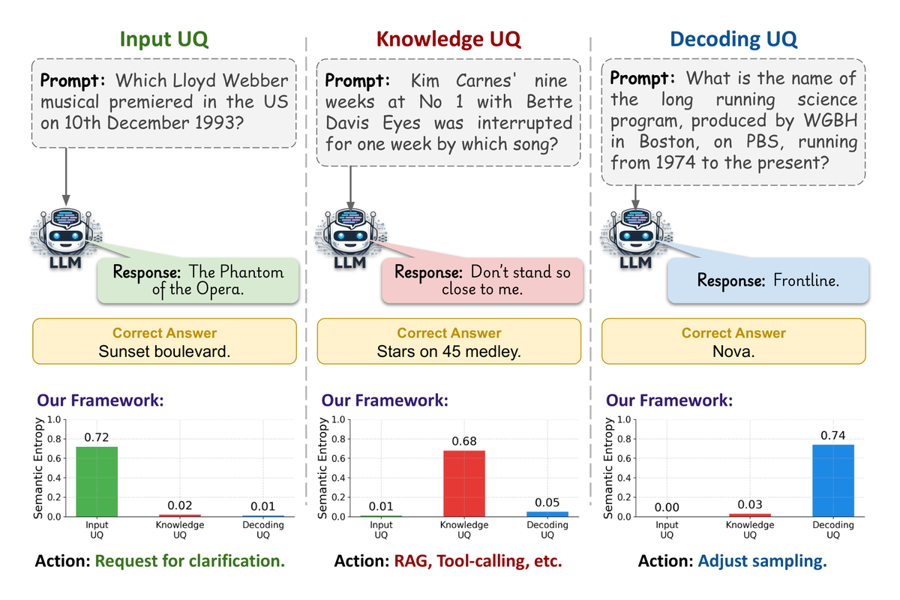

The Anatomy of Uncertainty in LLMs

Summary
We decompose language model uncertainty into three semantic sources — input ambiguity from underspecified prompts, knowledge gaps from insufficient parametric evidence, and decoding randomness from stochastic sampling — and show that their relative contributions shift across model sizes and tasks, with implications for reliability assessment and hallucination detection.
BibTeX
@inproceedings{taparia2026anatomy,
title={The Anatomy of Uncertainty in {LLMs}},
author={Taparia, Aditya and Senanayake, Ransalu and Thopalli, Kowshik and Narayanaswamy, Vivek},
booktitle={ICLR Workshop on I Can't Believe It's Not Better: Where Large Language Models Need to Improve},
year={2026},
url={https://openreview.net/forum?id=0GYclsjLUb},
eprint={2603.24967},
archivePrefix={arXiv}
}